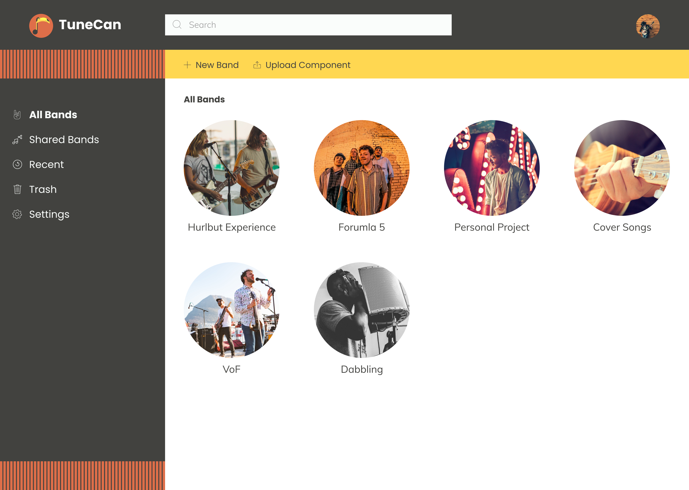
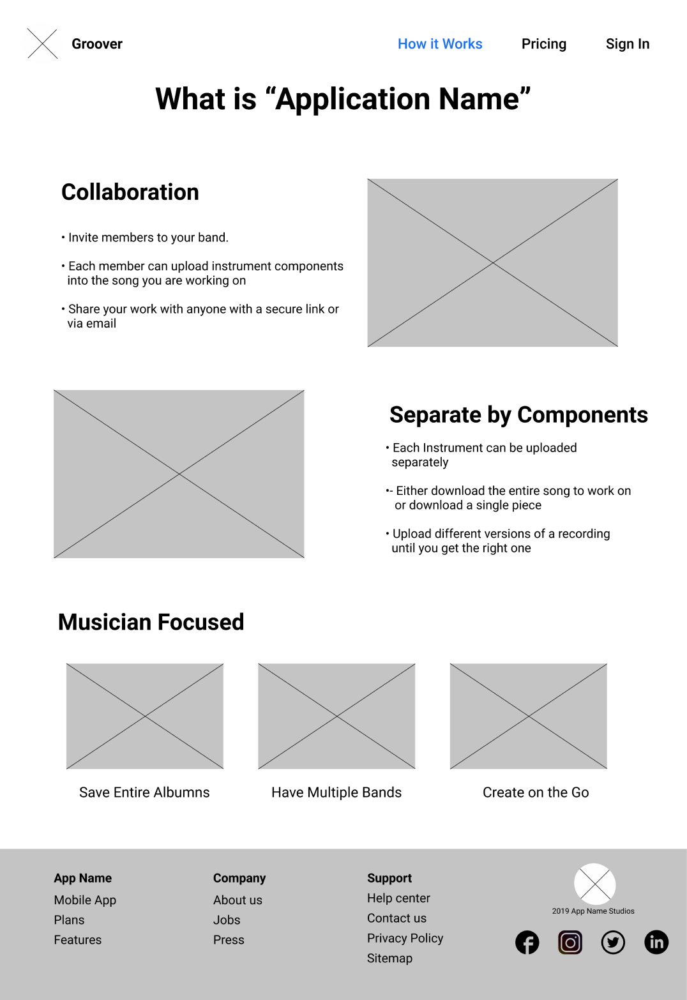
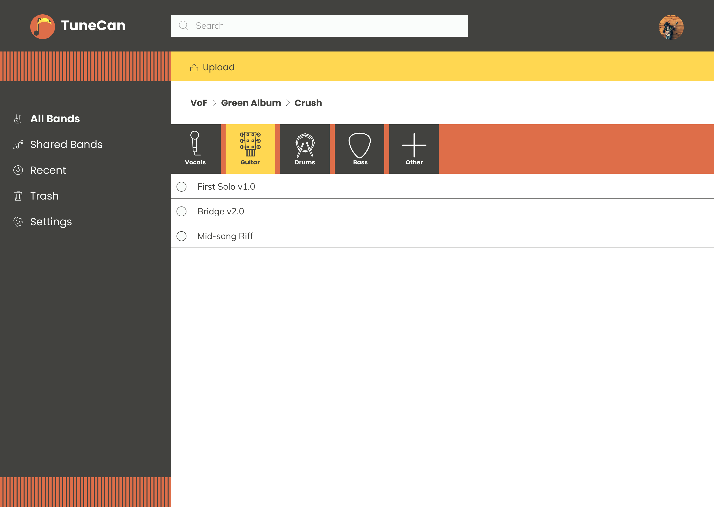

Musical artists and producers are constantly saving instrumental and vocal snippets to use in future songs. These components can be as small as a hit on a drum, to a complete guitar solo. Musicians want to spend
more
time perfecting their songs and less time trying to remember where they saved the correct audio components. Whether playing in a garage or selling out stadiums, TuneCan was created to help all song creators improve their workflow.
Problem:
Creating a song is an extremely complex process that typically has many people involved. Artists and producers record multiple versions of drum tracks, guitar solos, vocals and more. They even record
random
sounds they feel fit the vibe of a particular song. Artists and producers need a way to save and organize their components for easy use. Life on the road can be difficult and stressful; however, making music should not be.
Solution:
TuneCan is a cloud storage application that provides the necessary tools for artists and producers to store and organize their song components. The goal is to provide a platform where song components can be
uploaded
and organized by band, album, song, and specific instrument. Each user may have multiple bands and songs for all of their projects.
Landing Page
About Page - Collaboration

All Bands Dashboard
Research
User Survey:
I began with a user survey that was sent out by email. I collected 19 responses and gathered the following results:
94.4% of participants used cloud storage to upload content.
53.6% said collaboration was “Important.”
72.2% said content organization was “Very Important.”
83.3% said they use both the computer and mobile to access their storage.
100% said they prefer to access their storage on a desktop.
I did a SWOT analysis on three storage applications to learn about similar applications and determine what they were doing well and what could be improved. These include Evernote, Flickr,
and
Dropbox. Learning about similar storage platforms provided a springboard for TuneCan to find its best path forward.
Evernote
Strengths:
+ Great organization
+ Note-taking capabilities
+ Images and PDFs can be uploaded
+ Can be used on various devices
Weaknesses:
- No version control
- No simultaneous user collaboration
- Free version is limited
- Complex user interface
Opportunities:
• Business becoming more sustainable
• Teams need collaboration
• Decrease payment cost for premium
• Increase organizational abilities
Threats:
• Not everyone has a device to access application
• Everyone in business needs a company issued device
• Flooded market
• Steep learning curve
Flickr
Strengths:
+ Great for portfolios
+ Image editing in application
+ Private and public storage
+ Can be embedded into blogs and websites
Weaknesses:
- Switched ownership in recent years
- Premium account and free accounts change often
- Limited to 1000 photos
- Limited to photos and videos
Opportunities:
• New ownership could lead to new changes
• Broaden uploading capabilities
• Create ways for people to monetize their content
Threats:
• Other competing companies
• Expensive premium prices
• No way for creators to make money
Dropbox
Strengths:
+ 2GB of free storage
+ Payment plans for businesses
+ Dropbox paper is a nice addition
+ Password protected sharing capabilities
Weaknesses:
- More focused on documents and files
- Not as collaborative as other platforms
- Dropbox paper is limited
- Google Drive offers more space
Opportunities:
• Expansion of Dropbox Paper
• Growing demand for cloud storage applications
• Collaboration is becoming increasingly important
Three user personas were created to define the scope of this project. There were only three distinct users because TuneCan is an application based on musicals artists and producers.
Musical Artist(s)
Family or Friend of Artist
Music Producer
Mich B.
“As someone involved in the local music community, I would love a place to hear what local artists have been working on.”
Age: 26 / Location: Rochester, NY
Goals
A platform to share her music with her friends and family
A platform to hear and receive other people's music
Ability to record short voice memos to record jingles on the road
Frustrations
Other platforms are too complicated and have too many options
Needs access to content online and offline to share her music with anyone
Storage limitations and expensive premium membership options
Beth H.
“My son is always on the road. Being able to hear his current music and share it with friends is a way for us to connect.”
Age: 63 / Location: Austin, TX
Goals
Easy interface to find her sons songs
Ability to receive song components from her son, and a way to share with her friends
Ability to download song components for use offline
Frustrations
Owning an older computer she gets frustrated by load times
Gets overwhelmed by busy applications that have too many features
Daniel J.
“Always being on the road and producing music is tiring. Having one place to store my music components would be beneficial.”
Age: 30 / Location: Brooklyn, NY
Goals
A platform to store all his current songs for easy access
A way to organize his song components for easy song editing
Ability to store music public and privately
Frustrations
Other platforms are more directed towards file storage
Hard to share song components with other musicians
Other sites do not contain the level of organization that he requires
After all of the research was complete and organized, I moved on to create user stories. I created a priority list of what the application needed now and what could be implemented in an updated version.
As a user, I want...
high priority
Create account
Upload content to the account
Organize by musical component
Medium priority
Ability to organize content
Ability to save unique components
Ability to share content
Access content on mobile and web
Low priority
Ability to share via private link
Unlimited storage
Visible amount of storage
User Flows:
User Flows were created for the most important processes discovered during the research phase. These included sharing content, uploading content, organizational methods, and more.
Site Map:
The last step before beginning wireframing was creating a site map. Organization of cloud storage applications can be confusing. The site map was a cohesive way to remain on track while creating the mockups.
Once the application started to take form, branding became a top priority. People judge books by their cover. Thus, TuneCan had to appeal to all musicians and look modern, simple and stylish.
Multiple mood boards were created to feel out the different vibes TuneCan may take. After many hours of contemplation, a more serious, dark look was chosen. I did this for multiple reasons. To start,
musical artists and producers spend hours behind a computer screen when not recording to mix, edit, and rearrange their musical pieces. I wanted to ease potential eye strain during these long hours. Lastly, this application is meant to
improve the workflow of artists. This is a professional application, and I wanted it to look that way.
Color Palette:
A fun, yet professional color palette was chosen. I wanted to reflect feelings of creativity while also establishing TuneCan as a brand that should be taken seriously. The bright colors give a sense of enthusiasm and
happiness, while the darker colors provide a sense of elegance.
Typography:
The two typefaces chosen were Poppins (Branding) and Muli (Complimentary). These were chosen because they look fun, are easy to read, and truly reflect the vibe of TuneCan.
Logo Design and Process:
I started with some basic sketches to determine the route I wanted to take. Out of several pages of sketches, I felt that a toucan bird with the quarter note best fit the creative style of TuneCan.
Initial Logo Drawings
Final Logo Drawing
After I chose the final drawing, I went ahead and created it in Adobe Illustrator. The first round of design was a great place to start, but more work needed to be done. I was able to refine the logo
by adding a heavier stroke and adding colors to compliment the brand.
Black and White Logo
Colored Logo
I created the logo using the Fibonacci sequence to make it appealing to the eye and mind. I was able to create perfect curves that are all in proportion to one another and used the shape builder tool to merge and
dissect the pieces I did not want. Lastly, I increased the stroke on the final design. The former stroke was too thin and looked out of place compared to the size of the body of the toucan.
This logo represents the brand in many ways. The body of the toucan is in the shape of a quarter note and the toucan is fun, creative, and inviting. It is easily recognizable which will
increase brand recognition.
Logo with Brand Name
WireFrames:
With branding complete, it was finally time to create some mockups. I started by drawing out basic sketches of what I thought the layout would look like.
Sharing, add member, and profile sketch
homepage, upload, and song view sketch
homepage, landing, and sign up/in sketch
organize, landing, and trash folder sketch
From these sketches I created a working prototype using Figma and InVision. These screens were bare bones and contained general information.
landing page mock-up

about page mock-up
song component mock-up
User Testing Round 1:
User testing was instrumental in helping establish the final design of TuneCan. Users were asked what they thought the website was for, to create an account, organize content, share content, and sign out. A few
things were discovered during testing:
The content strategy needed work. The site was too vague and it left users feeling confused.
The uploading of song components needed to be improved. Users were unsure how to upload content to the application.
Potential issues with selecting more than one song file at once.
This feedback was helpful and used to create the high fidelity mockups.
High Fidelity Mockups:
The high fidelity mockups were made with feedback gathered from the initial round of testing. Although the feel of the site remained the same, certain components and user flows were updated to increase performance. I
did a complete overhaul of the content strategy. I focused on articulating the purpose of the site this time around. I reworked the song selection, and content uploading by using contextual UX.
Between creating the high fidelity mockups and additional user tests, I performed preference testing on the screens. I tested to see how people responded to shape changes, where the search bar should
go on mobile, and if modal windows were effective in the design. Below are two examples of tests run and the percentages of what people chose.
(65%) mobile menu with tunecan
VS
(35%) mobile menu without tunecan
(43%) dashboard with soundwaves
VS
(57%) dashboard without soundwaves
high fidelity user testing:
Similar to the initial mockups, users were tasked with completing specific tasks while thinking out loud. The tasks were:
Sign up for an account
Upload a song component
Organize a piece of content
Share an album with a friend
This round of testing was vastly superior to the original. Each user identified minor improvements that could be made to my design. Improvements ranged from simple grammatical errors, to concerns that content could
only be uploaded from the main screen. These final rounds of user testing helped make TuneCan a solid product.
Below are some of the changes made to the final design. In the first case, the addition of an "Other" option was added. Musicians may have unique instrument components aside from the standard
guitar, drums, bass, and vocals. An option needed to be added for other instruments.
Initial components design

final components design
Users had a difficult time adding a new song to an album. I created a modal window instead of a side menu bar which helped users complete the task with less confusion.
The cloud storage survey identified what people valued and the competitive analysis provided insight as to how to enter the market.
Every step of the process helped shape the final design of TuneCan. User testing proved to be the most important step. Towards the end of my design, I was so familiar with the application that I lost
sight of what a new user would be experiencing. User tests allowed me to take a step back and recognize that major improvements needed to be made.
Future Improvements:
Looking back at this being my first ever UX project, there is so much I can improved. In future updates, I would improve on current content organization, refine mockups, and overhaul the mobile experience. Lastly,
I
would dive deeper into band interactions. I currently have ways to share songs between members, but no way to leave notes on song components. Simple collaboration features like these would improve the platform.
Final Thoughts:
From the initial surveys, the users clearly stated what was important to them in a cloud storage application.
Uploading content
Sharing content
Organizational methods
Collaboration
TuneCan successfully provides solutions to all user needs and is able to compete with other cloud storage applications. Users can create bands, albums, and songs for collaboration or solo work. Users can upload
their
song components into specific songs and organize them as they deem fit. TuneCan is an all-in-one package for any musical artist or producer and could be an essential part of any professional workflow.
As Steven Tyler from Aerosmith said, “We believed that anything that was worth doing was worth overdoing,” and I believe musical artists would use this platform to achieve just that.